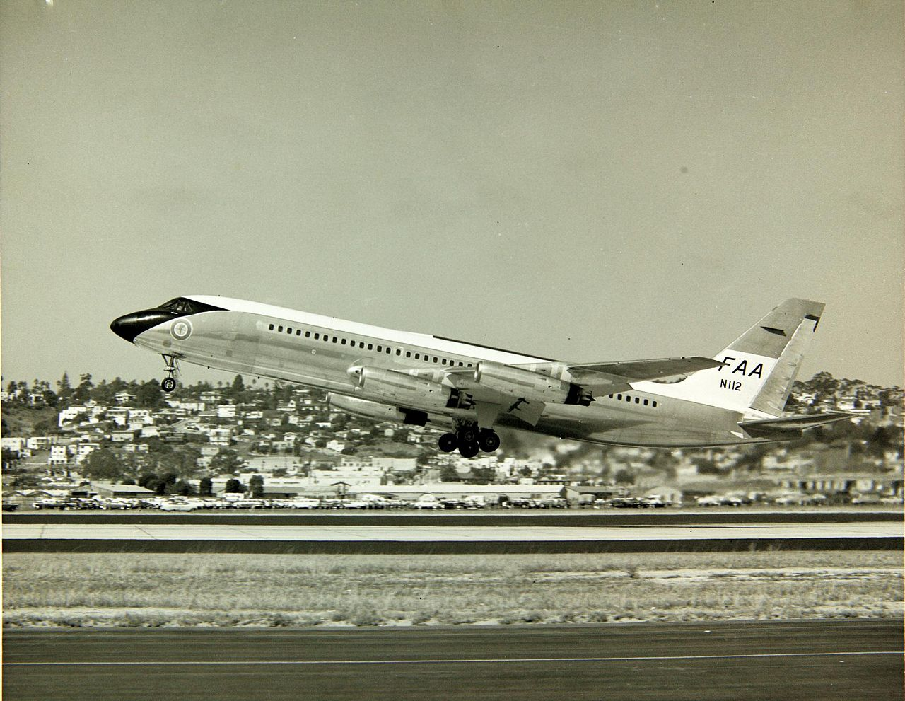

The evolution air traffic control in the US
Safety
16 May 2021
The air traffic control system is a crucial part of keeping our skies safe, organized, and efficient in an era of ever increasing congestion. It began as a way to give pilots essential information about weather and traffic at the first airports. People on the ground used any technology they could to communicate with pilots, whether by waving flags, flashing lights, or by using radio.
In its early days, aviation was extremely dangerous. Every flight was a gamble and a risk. But the number of people flying increased, so did accidents and fatalities, and thus illustrated the need to not only provide pilots with information but also to tell them what to do.
This was especially true in the late 1920s and early 30s, where commercial aviation was becoming more and more commonplace. The first air traffic controllers worked as tower controllers for private companies (usually airlines) at each airport, who provided landing and takeoff clearances to arriving and departing aircraft. With no enroute ATC, aircraft experienced congestion, near misses, and midair collisions, especially in bad weather.
Early airfields had towers with rotating light beacons to help pilots navigate visually. This tower also had a windsock. Image via FAA.
Pictured is Sergeant William P. Bostic of the 301st Fighter Squadron (the Tuskegee Airmen) in a control tower. At this point, light guns were still being used to signal pilots, as well as radio communications. Image via Library of Congress.
Although formal ATC procedures were first introduced at ICAN, the precursor to ICAO, in 1922, the US ATC system was taken over by the government in 1936. The first Air Route Traffic Control Centers (ARTCC) were opened in 1936, starting with Newark, NJ, Chicago, IL, and Cleveland, OH. They employed simple yet effective technologies, the most crucial of which was radio, which not only allowed communication but also navigation by sending directed beams through the air for pilots to follow. At this point, tower controllers were still employed privately, although the government also took over them in 1938.
Then, World War II happened, which created leaps and bounds of progress for ATC. Because WWII created a significant need for cargo transport, the commercial aviation industry grew quickly. Additionally, advances in military aviation technology were well adapted to civilian practices. Most notably, the invention of radar and application in ATC was revolutionary. Instead of just guessing and predicting the location of aircraft based on pilot position reports, controllers could actually see all aircraft on screen in real time, vastly improving the safety of the system.
Initially, radar was only used by tower controllers near airports, as the government feared the high costs associated with implementing it over larger areas. This continued until 1956, when a midair collision over the Grand Canyon killed 128 people. The government quickly took action to improve the national ATC system, which included expanded radar coverage.
With the introduction of the Boeing 707 and Convair 880 into service, the Jet Age had begun, and with it, exponentially increasing passenger numbers. As the skies became busier, ATC technology needed to catch up for the sake of safety, and it did. Between 1958 and 1978, the FAA introduced technologies such as transponders and computers to aid controllers. They also created the ATCSCC, Air Traffic Control System Command Center, to manage air traffic at the highest scales and make macro adjustments to the flow of aircraft.
The FAA bought a Convair 880 in 1961, registered N112, and used it to train Flight Standards pilots and examiners. Image via San Diego Air and Space Museum Archives.
In 1978, the airline industry was deregulated, which fundamentally changed the industry and shaped the way air travel would become the way we know it today. As airlines became free to operate as many flights they wanted to any destination, ridership saw yet an even steeper boom - but controllers did not. As the skies became increasingly congested, air traffic controllers were left out to dry, with a large proportion of them experiencing chronic stress and related health conditions. Very few controllers stayed with the FAA until retirement age. In 1981, PATCO, the union representing air traffic controllers at the time, started a strike against the poor conditions controllers worked in, as well as the numerous technological issues the government neglected to deal with. Unfortunately, then-president Reagan did not respond favorably to the strike, terminating eleven thousand workers who went on strike. The empty positions were filled with anyone the FAA could get their hands on, and flights were limited in the interest of safety.
In the 80s and 90s, the FAA was plagued by an overarching issue: they were behind the times. Like most other industries, automation was inevitable, and it created new jobs while removing obsolete ones. But advances in technology were necessary for automation to be successful or even feasible. The introduction of the computer into the ATC system was a huge leap forward, yet it was still lacking in many aspects. The FAA made several attempts at introducing automation in the ATC system, but it was almost always held back by a fear of increased cost. In particular, controllers were (and still are) relying on paper flight strips to keep track of critical information about flights and their progress. The FAA had pushed for replacing paper with electronic flight strips, but kept seeing different obstacles, and today, paper strips are still being used. Vacuum tubes were another example of the FAA being stuck in the past. A vacuum tube was a piece of technology developed early in the 20th century that was a precursor to the transistor, a cornerstone of modern electronics. Though they had become largely obsolete by the 90s, the FAA was still buying them in bulk to be used in outdated ATC technology.
An example of a vacuum tube. Image by Mataresephotos via Wikimedia Commons, CC BY 3.0.
Despite its issues, the FAA's ATC system today maintains safety in our skies each day and night in an age of nonstop flying. Controllers are some of the less recognized professionals in the aviation industry, but their role is critical. They are thoroughly trained and supervised in the workplace to deal with expected and unexpected circumstances while maintaining efficiency and professionalism.
References
- "Air Traffic Control System Command Center (ATCSCC)". Federal Aviation Administration, 2021. https://www.faa.gov/about/office_org/headquarters_offices/ato/service_units/systemops/nas_ops/atcscc/.
- "Convair 880". Goleta Air and Space Museum. https://www.air-and-space.com/Convair%20880.htm.
- Frissell, Toni, photographer. Sgt. William P. Bostic, 301st F.S. in control tower, March. Italy, 1945. [March] Photograph. https://www.loc.gov/item/2007675008/.
- "A History of Air Traffic Control". National Air Traffic Controllers Association. https://www.natca.org/wp-content/uploads/2019/12/NATCA_ATC_History.pdf.
- "A History of Air Traffic Control Provision in the United States". Eno Center for Transportation, 2016. https://www.enotrans.org/article/history-air-traffic-control-provision-united-states/.
- Kraus, Theresa L. "Celebrating 75 Years of Federal Air Traffic Control". Federal Aviation Administration, 2011. https://www.faa.gov/about/history/milestones/media/Celebrating_75_Years_of_Federal_Air_Traffic_Control.pdf.
- Neiva, Rui. "Electronic Flight Strips: A Brief History in the U.S. and Canada". Eno Center for Transportation, 2017. https://www.enotrans.org/article/electronic-flight-strips-brief-history-u-s-canada/.
- "Photo Album: The Foundation: Building the Airways". Federal Aviation Administration, 2017. https://www.faa.gov/about/history/photo_album/foundation/?cid=building.
- "Profession: History of Air Traffic Control". Unión Sindical de Controladores Aéreos. https://www.usca.es/en/profession/history-of-air-traffic-control/.